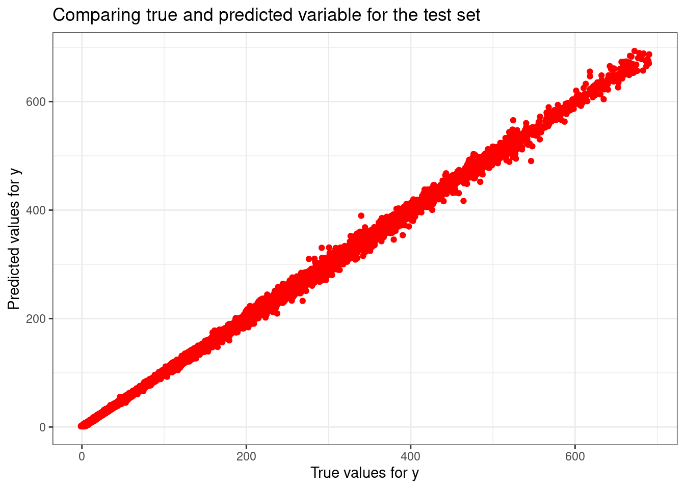

How do daily opening prices, trading volumes, and historical trends influence the adjusted closing prices of stocks?
Description:
This dataset consists of the daily stock prices and volume of 14 different tech companies, including Apple (AAPL), Amazon (AMZN), Alphabet (GOOGL), and Meta Platforms (META) and more!
Regression in r
Regression is a modeling technique for predicting quantitative-valued target attributes. Works on the principle of y = mx + c .
# Reading the CSVstock<- readr::read_csv('https://raw.githubusercontent.com/rfordatascience/tidytuesday/master/data/2023/2023-02-07/big_tech_stock_prices.csv')
Rows: 45088 Columns: 8
── Column specification ────────────────────────────────────────────────────────
Delimiter: ","
chr (1): stock_symbol
dbl (6): open, high, low, close, adj_close, volume
date (1): date
ℹ Use `spec()` to retrieve the full column specification for this data.
ℹ Specify the column types or set `show_col_types = FALSE` to quiet this message.
# Create a linear regression model specification library(parsnip)lin_ref_spec <-linear_reg() |>set_engine("lm")# Fit the model to the training datalin_reg_fit <-lin_ref_spec |>fit(y~ X, data = train_data)
We are fitting the model using the train data where the X is features (open ) and y is the close price.
Step 3: Apply Model to the Test Set
# Apply model to the test set y_pred_test <-predict(lin_reg_fit, new_data =test_data) |>pull(.pred)
Exposing model to the new data (test data) to check how generalized the model performs.
Step 4: Evaluate Model Performance on the test set
# Plotting true vs ppredicted valuesggplot() +geom_point(aes(x=as.vector(y_test), y= y_pred_test), color ="red")+ggtitle("Comparing true and predicted variable for the test set")+xlab("True values for y")+ylab("Predicted values for y")

From the above plot we can that the predicted values are close to the true values which says the model has performed good and it is linear, still there is room for improvement.
library(yardstick)# Prepare data for yardstick evaluationtruth <-as.vector(y_test)estimate <- y_pred_testeval_data <-tibble (truth =as.vector(y_test),estimate = y_pred_test)# Model evaluationrmse_value <-mean((truth - estimate)^2) %>%sqrt()r2_value <-rsq(eval_data, truth = truth, estimate = estimate)cat("Root mean squared error =", sprintf("%.4f",rmse_value),"\n")
Root mean squared error = 2.8092
The RMSE value suggest that how foar each point in the data is far away from the true value.
2.8092 is relatively low value, so the predictions has less amount of deviation from the true value.
Sum of Absolute weights show the model complexity, as you can with our predictions, as the number of features goes higher the model complexity also increases.
As you can see, the train error for the model is less compared to the test error which on a higher rate compared. This means that model has overfitting issues (works well on the train data and not the testing data) and works bad for new data.
To avoid this issue, we can use regularization (Induce penalty for the model to correct the errors)
Ridge Regression
Ridge regression is a model tuning method that is used to analyse any data that suffers from multicollinearity. This method performs L2 regularization. When the issue of multicollinearity occurs, least-squares are unbiased, and variances are large, this results in predicted values being far away from the actual values.
# Convert to data frametrain_data <-tibble(y = y_train, X_train5)test_data <-tibble(y = y_test, X_test5)# Set up a Ridge regression model specificationridge_spec <-linear_reg(penalty =0.4, mixture =1) %>%set_engine("glmnet")# Fit the modelridge_fit <- ridge_spec %>%fit(y ~ ., data = train_data)# Make predictionsy_pred_train_ridge <-predict(ridge_fit, new_data = train_data)$.predy_pred_test_ridge <-predict(ridge_fit, new_data = test_data)$.pred# Make predictionsy_pred_train_ridge <-predict(ridge_fit, new_data = train_data)$.predy_pred_test_ridge <-predict(ridge_fit, new_data = train_data)$.pred# Calculate RMSEcalculate_rmse <-function(actual, predicted) { rmse <-sqrt(mean((actual - predicted)^2)) rmse}# Extract coefficientsridge_coef <-coefficients(ridge_fit$fit)model6 <-sprintf("%.2f X + %.2f X2 + %.2f X3 + %.2f X4 + %.2f X5 + %.2f", ridge_coef[2], ridge_coef[3], ridge_coef[4], ridge_coef[5], ridge_coef[6], ridge_coef[1])values6 <-tibble(Model = model6,Train_error =calculate_rmse(y_train, y_pred_train_ridge),Test_error =calculate_rmse(y_test, y_pred_test_ridge),Sum_of_Absolute_Weights =sum(abs(ridge_coef)))
Warning in actual - predicted: longer object length is not a multiple of
shorter object length
# Combining the resultsfinal_results <-bind_rows(results, values6)final_results
As you can see the Ridge regression worked best when there a lot of features used, the last model with 5 features open, high, low, adj_close, volume.
The test error has decreased drastically when compared to the other models where was no improvement.
The tradeofff here is that the test error has increased but the sum of the weights or the complexity of the model has also increased.
But we can that most of the coefficients has been reduced to zero to generalize to the unseen data. Therefore Ridge regression has some progress in reducing the test error rate.
Lasso regression
LASSO regression, also known as L1 regularization, is a popular technique used in statistical modeling and machine learning to estimate the relationships between variables and make predictions. LASSO stands for Least Absolute Shrinkage and Selection Operator. The primary goal of LASSO regression is to find a balance between model simplicity and accuracy. It achieves this by adding a penalty term to the traditional linear regression model, which encourages sparse solutions where some coefficients are forced to be exactly zero.
# Define the lasso specificationlasso_spec <-linear_reg(penalty =0.02, mixture =1) %>%set_engine("glmnet")# Ensure the data is combined correctlytrain_data <-tibble(y = y_train, X1 = X_train5[,1], X2 = X_train5[,2], X3 = X_train5[,3], X4 = X_train5[,4], X5 = X_train5[,5])# Fit the modellasso_fit <- lasso_spec %>%fit(y ~ ., data = train_data)# Extract coefficientslasso_coefs <- lasso_fit$fit$beta[,1]# Predictionsy_pred_train_lasso <-predict(lasso_fit, new_data = train_data)$.predy_pred_test_lasso <-predict(lasso_fit, new_data =tibble(X1 = X_test5[,1], X2 = X_test5[,2], X3 = X_test5[,3], X4 = X_test5[,4], X5 = X_test5[,5]))$.pred# Create the model stringmodel7 <-sprintf("%.2f X + %.2f X2 + %.2f X3 + %.2f X4 + %.2f X5 + %.2f", lasso_coefs[2], lasso_coefs[3], lasso_coefs[4], lasso_coefs[5], lasso_coefs[6], lasso_fit$fit$a0[1])values7 <-c(model7, sqrt(mean((y_train - y_pred_train_lasso)^2)),sqrt(mean((y_test - y_pred_test_lasso)^2)),sum(abs(lasso_coefs[-1])) +abs(lasso_fit$fit$a0[1]))# Make the results tibblelasso_results <-tibble(Model ="Lasso",`Train error`= values7[2], `Test error`= values7[3], `Sum of Absolute Weights`= values7[4])lasso_results
# A tibble: 1 × 4
Model `Train error` `Test error` `Sum of Absolute Weights`
<chr> <chr> <chr> <chr>
1 Lasso 112.484103751038 2037.87898434326 91.4551170916406